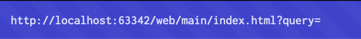

What is an XSS Attack?
Cross-Site Scripting (XSS) attacks are a type of injection, where malicious scripts are injected into trusted websites. These attacks occur when an attacker uses a web application to send malicious code, generally in the form of a browser-side script, to a different end user. Attackers often initiate an XSS attack by sending a malicious link to a user and enticing the user to click it.
How are users impacted by XSS attacks
The variety of attacks based on XSS is almost limitless, but they commonly include transmitting private data, like cookies or other session information, to the attacker, redirecting the victim to web content controlled by the attacker, or performing other malicious operations on the user’s machine under the guise of the vulnerable site.
How does cross site scripting work?

How do you test for XSS vunerabilities?
You can confirm most kinds of XSS vulnerability by injecting some sort of harmless script. It is common to test for XSS vunerabilities by using the alert() function for this because it's short, harmless, and pretty hard to miss when it's successfully called.
This is an example of a vunerable input field. In this input field a malicious attacker could inject code.
Code Examples of different XSS attacks
Reflected XSS attack
Reflected XSS attacks are where the malicious script comes from the current HTTP request. Try inserting this code at the end of the URL of this website.
<img src onerror="alert('This is a reflected XSS attack')" />
Stored XSS attack
A stored XSS attack occurs when a web application fails to properly sanitise user-supplied input before storing it in a database or server-side resource (e.g., a message board, comment system , or user profile). When this unsanitised data is later retrieved and rendered on a web page, it can allow an attacker's malicious script to execute in the context of a legitimate user's browser session. Try this simple stored XSS attack, the page will reload, but you should see the HTML code below the vulnerable search bar.
<h1 style="color:red;font-size:50px;">This is a stored XSS attack!</h1>
You Queried:
DOM-based XSS attack
DOM-based XSS vulnerabilities usually arise when JavaScript takes data from an attacker-controllable source, such as the URL, and passes it to a sink that supports dynamic code execution, such as eval() or innerHTML. This enables attackers to execute malicious JavaScript, which typically allows them to hijack other users' accounts. (rewrite)
How to prevent XSS attacks
XSS attacks can be mostly be prevented through encoding and validating user input
Encoding user input
Encoding should be implemented just before inserting user-controlled data onto a page since the encoding method depends on the context of the insertion. For instance, values within a JavaScript string needs a different form of encoding compared to data in an HTML context.
For example in an HTML context this is how you would encode non whitelisted values
<turns into
<
>turns into
>
In a JavaScript string context, non-alphanumeric values should be Unicode-escaped:
>turns into
\u003e
<turns into
\u003c
Sometimes you'll need to apply multiple layers of encoding, in the correct order. For example, to safely embed user input inside an event handler, you need to deal with both the JavaScript context and the HTML context. So you need to first Unicode-escape the input, and then HTML-encode it:
<a href="#" onclick="x='This string needs two layers of escaping'">test</a>
Validating user input
Encoding is probably the most important line of XSS defense, but it is not sufficient to prevent XSS vulnerabilities in every context. You should also validate input as strictly as possible at the point when it is first received from a user.
Try this code from earlier, the only difference is that this search bar is using sanitisation to prevent malicious code injections.
<img src onerror="alert('This is a reflected XSS attack')" />
You Queried:
Content Security Policy
Content Security Policy (CSP) is an added layer of security that helps to detect and mitigate certain types of attacks, including Cross-Site Scripting (XSS) and data injection attacks. These attacks are used for everything from data theft, to site defacement, to malware distribution.
Configuring Content Security Policy involves adding the Content-Security-Policy HTTP header to a web page and giving it values to control what resources the user agent is allowed to load for that page.
Specifying your policy
You can use the Content-Security-Policy HTTP header to specify your policy, like this:
Content-Security-Policy: policy
What technologies do XSS attacks affect
Cross-Site Scripting only affects websites, however XSS attacks can also affect other web related technology such as web applications, web browsers and browser extensions